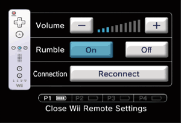

|
3
|
Controller Setup
|

|


Note: If your strap lock has a lock lever, press the lock lever down until you hear a click. This will prevent the strap lock from loosening.
This procedure allows the Wii Remote to communicate with the Wii console. The Wii Remote included with your Wii console has been synchronised with the Wii console at the factory. There are two different modes of synchronising (syncing) a Wii Remote with your Wii console. Standard Mode – The Standard Mode procedure is used when adding additional Wii Remotes to your Wii console or if you want to re-synchronise your original Wii Remote. Once synchronised, the Wii Remote will stay synced to the Wii console unless you overwrite this setting by syncing the Wii Remote to a different Wii console. One-Time Mode – This mode allows you to temporarily use your Wii Remote on a Wii console other than your own or to use a friend’s Wii Remote on your Wii console. It does not delete the Standard Mode setting stored in the Wii Remote. In this mode, the Wii Remote will only communicate with the Wii console while the power is on. When the power is turned off, the Wii Remote will lose its sync with the Wii console. Note: Only a Wii Remote in Standard Mode can turn the Wii console power ON or OFF. Standard Mode Synchronisation Note: Make sure you have placed batteries in the Wii Remote.

This procedure must be followed for each additional Wii Remote added to your Wii console.
Note: The blinking frequency of the Player LED will change depending on how much battery life is remaining.
One-Time Mode Synchronisation Note: This mode temporarily removes the Standard Mode Synchronisation setup for all Wii Remotes until the power of the Wii console is turned off. When the power is turned back on again, the Standard Mode Synchronisation will return.

IMPORTANT: If your Wii Remote loses its synchronisation with the Wii console and you are unable to re-sync it, review the Wii Remote troubleshooting procedure in the Wii Operations Manual (System Setup).
When using the Wii Balance Board™, please follow the precautions below to prevent causing damage to the Wii Balance Board and surrounding objects, or injury to yourself and other people.
Follow the steps below to set up your Wii Balance Board for use.
IMPORTANT: Do not hold down
|
 on a Wii Remote that is synchronised with the Wii console.
on a Wii Remote that is synchronised with the Wii console.
 and
and  Buttons simultaneously on the Wii Remote that you want to synchronise with the Wii console.
Buttons simultaneously on the Wii Remote that you want to synchronise with the Wii console.


|

|

|